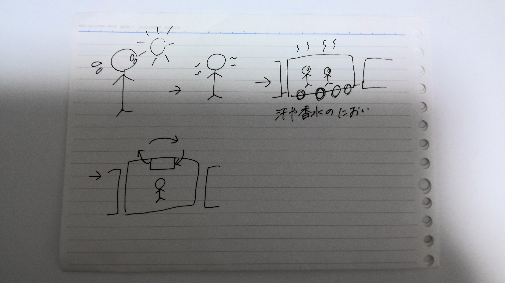
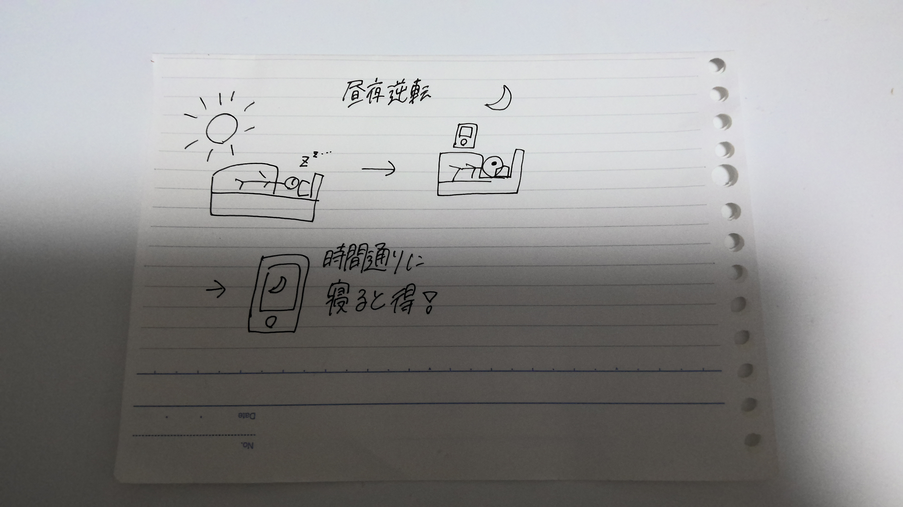

課題
世の中に存在する課題の発見
１．問題
電車内で夏は汗のにおいと香水の匂いで嫌な気持ちになることが多かった。しかし、冷房で喚起をしていないので、匂いがこもってしまう。
何号車かによっても違うので、レベルや体温など管理し、空気をきれいにし冷房が効くようになったらいいと思った。

学校がないと昼夜逆転になり、一日を無駄にすることが多く困った。
スマホを夜に触りたくなくなるように、夜はスマホを見たら損するようなアプリや出来事があればいいと思った。
